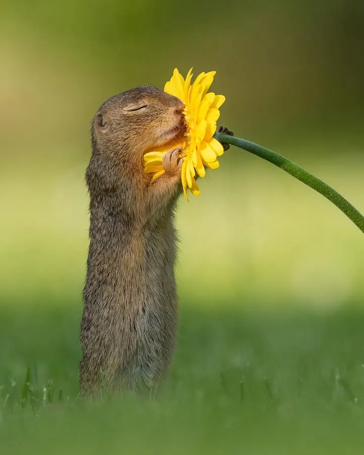
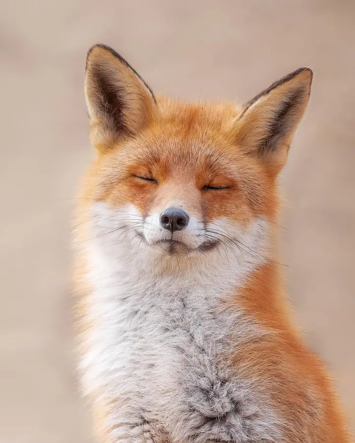
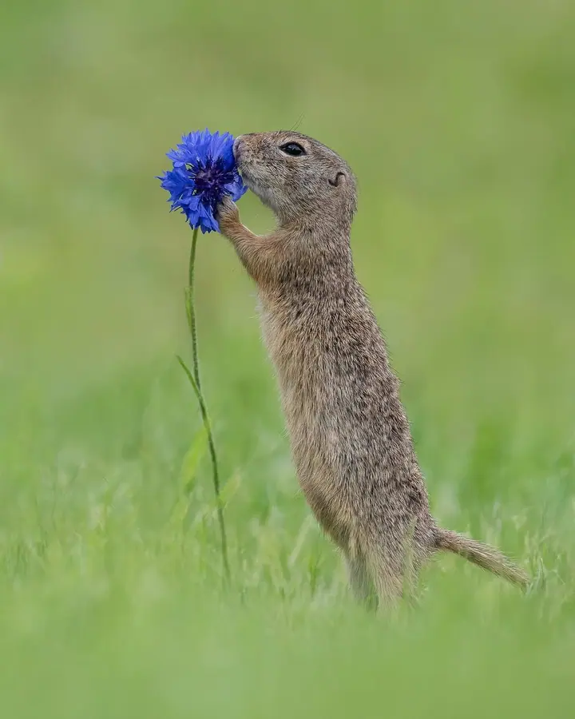
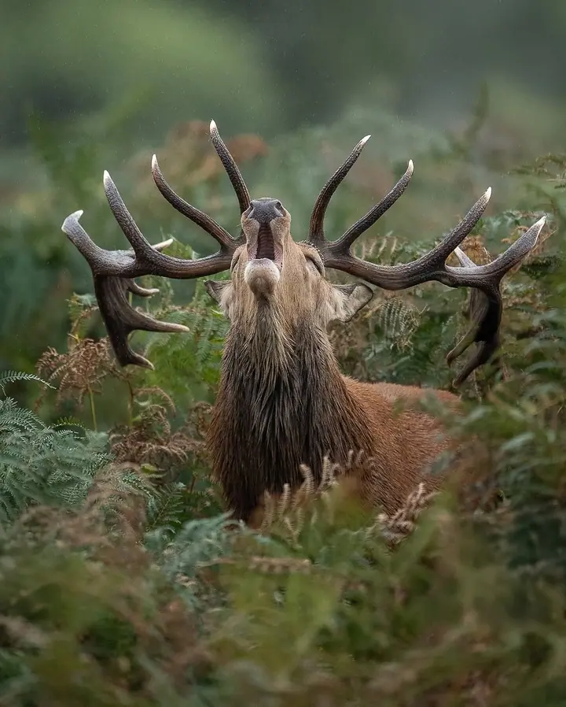
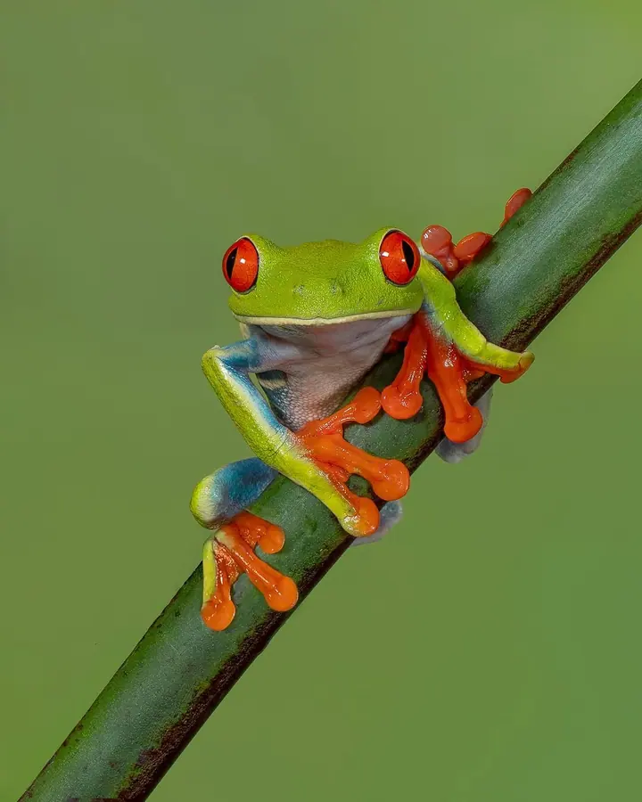
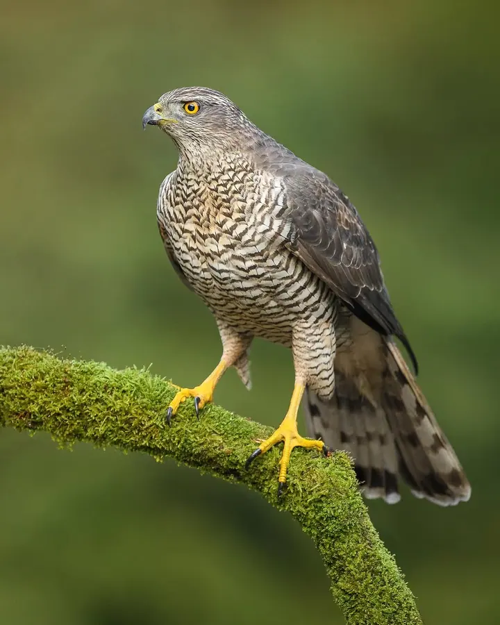
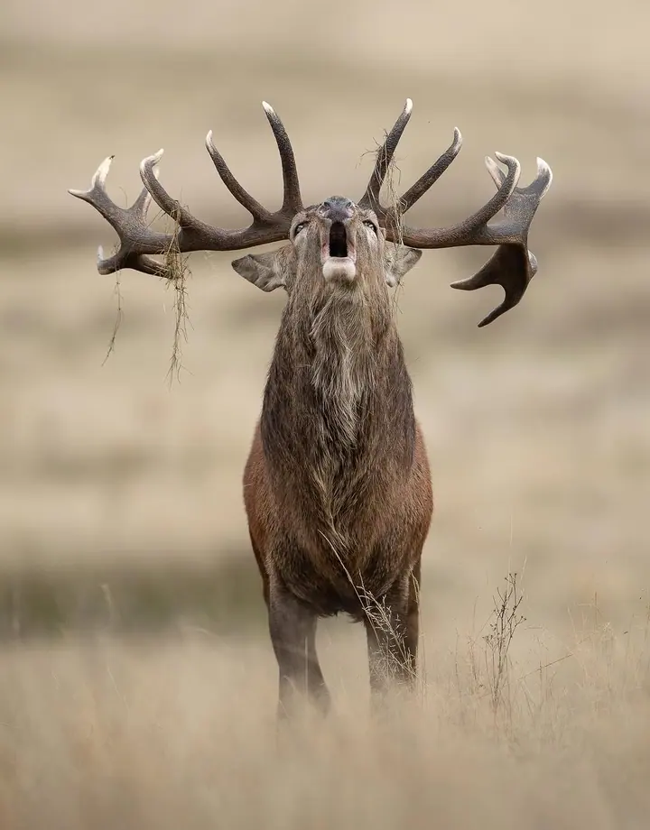
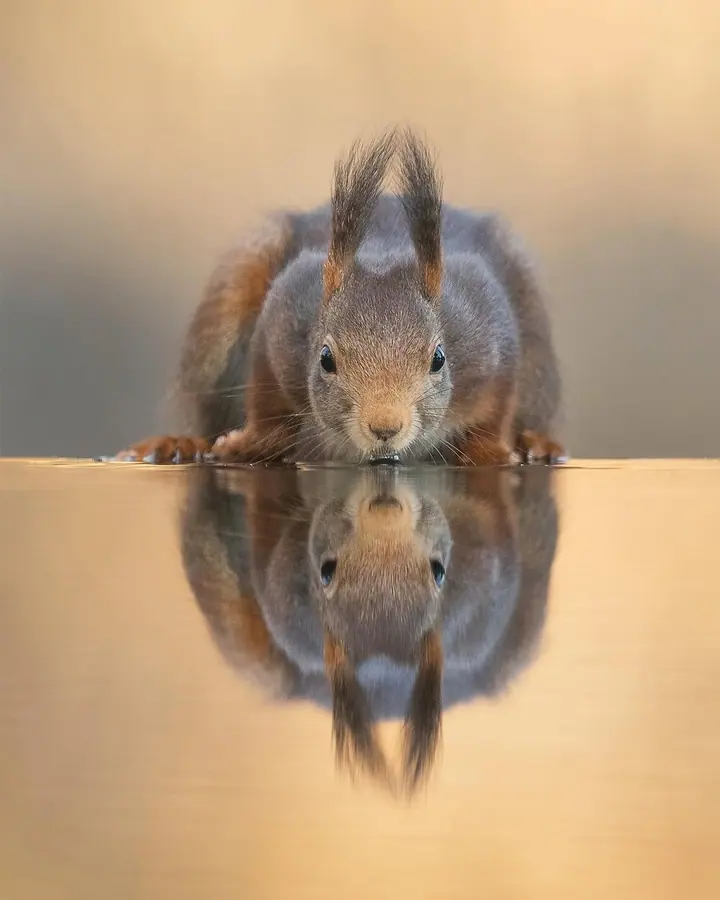
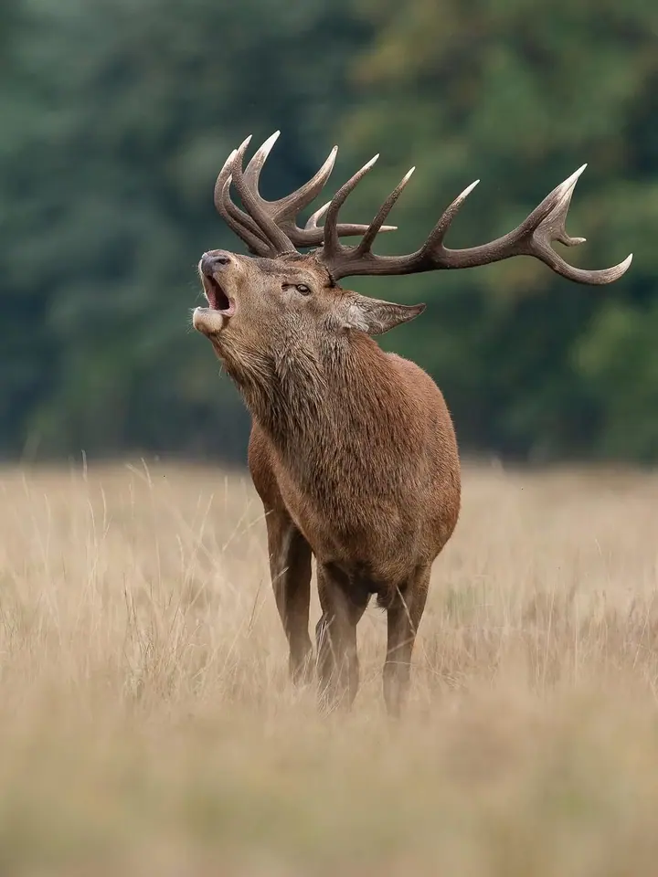

01 / 03
Fotoobrazy a tisky
Své fotografie zvířat prodávám jako tisky a obrazy v rámu. Nejznámější je série se syslem, který si přičichává ke květině.
Zeptat se na termín→








Divoká příroda, která vám zlepší den
Zeptat se na termín →(01) Ahoj
Jmenuji se Dick van Duijn a fotím divokou přírodu. Čekám na lišky , sysly mezi květinami a jeleny v říji , dokud mi samy nenabídnou chvíli, kterou chci ukázat ostatním. Snažím se lidem připomenout, jak krásná příroda kolem nás je.
320 000lidí sleduje mou práci na Instagramu
1 081příspěvků s fotkami a příběhy
(02) Co fotím
01 / 03
Své fotografie zvířat prodávám jako tisky a obrazy v rámu. Nejznámější je série se syslem, který si přičichává ke květině.
Zeptat se na termín→02 / 03
Výběr snímků vychází v omezeném počtu kusů. Každý má vlastní číslo série a můj podpis, a když se edice vyprodá, už se znovu tisknout nebude.
Zeptat se na termín→Dále nabízím
Rád spolupracuji se značkami, médii a agenturami. Pokud chystáte projekt, kde má hrát hlavní roli příroda, napište mi.
↗(04) Postup
Od první zprávy po hotovou galerii.
Krok 1 z 4
V obchodě si vyberete snímek, který vás oslovil, třeba ze série se syslem nebo z limitovaných edic.
Krok 2 z 4
Zvolíte velikost a případně rám. Rámy mají certifikaci FSC a jsou v černé, bílé nebo dubové barvě.
Krok 3 z 4
Zaplatíte kartou nebo e-peněženkou, vše probíhá přes zabezpečenou platbu.
Krok 4 z 4
Posílám po celém světě, do EU, Velké Británie a USA dorazí obraz do týdne.
Krása, kterou denně přehlížíme.
(05) Za objektivem
Žiji v Noordwijku v Nizozemsku a fotografii jsem se naučil sám. Specializuji se na divokou přírodu a krajinu a mám jednoduché poslání: připomínat lidem krásu, která je obklopuje každý den, ale kterou často bereme jako samozřejmost.
Mé fotky mají ve vás vyvolat lepší pocit ze sebe i ze světa kolem. Ať jde o lišku, která se slastně usmívá, nebo o sysla, který voní ke květině, chci, abyste se u nich zastavili a na chvíli si oddechli.
Moje snímky ukázaly mimo jiné CNN, NBC, FOX, Daily Mail a New York Post. Vybrané fotografie si můžete pořídit jako tisky nebo v limitovaných edicích s mým podpisem a rád se pustím i do spolupráce se značkami a médii.
Dick
Dick van Duijn · Fotograf divoké přírody
Tisky ze série se syslem začínají na 59 €, limitované edice na 79 €. Konečná cena záleží na velikosti a rámu.
Posílám po celém světě. Do EU, Velké Británie a USA dorazí zásilka do týdne.
Na všechny tisky i rámy se vztahují podmínky výměny, takže se nemusíte bát.
Každý kus má vlastní číslo série a můj podpis. Jakmile se edice vyprodá, už ji znovu nevydám.
(07) Kontakt
Napište pár vět o tom, co si představujete, a termín, který se vám hodí.
info@dickvanduijn.com